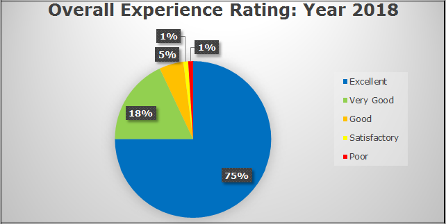

End User Feedback system helps to capture the valuable customer feedbacks to analyze the scope of improvement for Support Feedback can be classified country wise to narrow down the improvement scope at country level as well as tool wise to understand the tool level mitigations. Foundation Blocks of Feedback system are Resolution Time, Quality & Communication